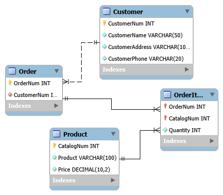
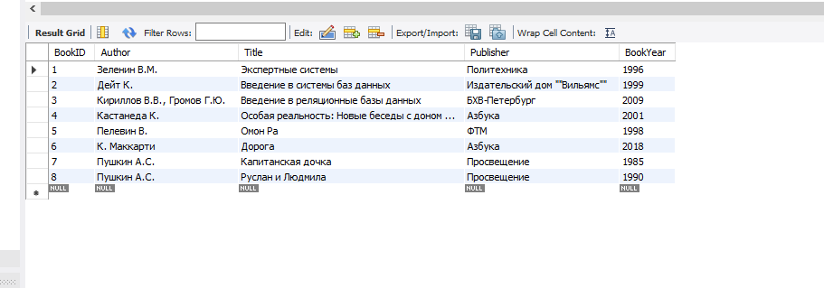

Самостоятельная работа 4. Нормализация реляционных баз данных¶
Инвариантная часть 4.1. Проектирование с учетом 3НФ¶
Исходная таблица имеет следующую структуру:
CatalogNum, Product, Price, OrderNum, Quantity, CustomerNum, CustomerName, CustomerAddress, CustomerPhone
Для приведения данной таблицы к 3НФ (третьей нормальной форме) необходимо избавиться от избыточности и транзитивных зависимостей. Для этого выделим сущности "Клиенты", "Товары", "Заказы" и "Позиции заказа".
Отношение "Клиенты" (Customer)¶
Хранит информацию о заказчиках. * CustomerNum (Первичный ключ, INT) * CustomerName (VARCHAR, NOT NULL) * CustomerAddress (VARCHAR, NOT NULL) * CustomerPhone (VARCHAR, NOT NULL)
Отношение "Товары" (Product)¶
Хранит информацию о товарах из каталога. * CatalogNum (Первичный ключ, INT) * Product (VARCHAR, NOT NULL) * Price (DECIMAL, NOT NULL)
Отношение "Заказы" (Order)¶
Идентифицирует каждый уникальный заказ, сделанный клиентом. * OrderNum (Первичный ключ, INT) * CustomerNum (Внешний ключ к Customer.CustomerNum, INT, NOT NULL)
Отношение "Позиции заказа" (OrderItem)¶
Связующая таблица для реализации отношения "многие-ко-многим" (один заказ может состоять из нескольких товаров, и один товар может быть в нескольких заказах).
* OrderNum (Внешний ключ к Order.OrderNum, INT, NOT NULL)
* CatalogNum (Внешний ключ к Product.CatalogNum, INT, NOT NULL)
* Quantity (INT, NOT NULL)
* Первичный ключ составной: (OrderNum, CatalogNum)
Связи между отношениями:¶
- Customer (1) — (М) Order: Один клиент может сделать несколько заказов, но один заказ принадлежит только одному клиенту. Связь по ключу
CustomerNum. - Order (1) — (М) OrderItem: В одном заказе может быть несколько позиций товаров (строк заказа). Связь по ключу
OrderNum. - Product (1) — (М) OrderItem: Один товар может присутствовать в разных заказах. Связь по ключу
CatalogNum.
Схема базы данных:

Вариативная часть 4.1_1. Написание простых запросов на SQL¶
Ниже представлены SQL запросы согласно заданию. Особое внимание уделено отличиям в синтаксисе Microsoft Access и СУБД MySQL.
Задание 1. Добавление книг одного автора
INSERT INTO Book (Author, Title, Publisher, BookYear) VALUES ('Пушкин А.С.', 'Капитанская дочка', 'Просвещение', 1985);
INSERT INTO Book (Author, Title, Publisher, BookYear) VALUES ('Пушкин А.С.', 'Руслан и Людмила', 'Просвещение', 1990);
SELECT * FROM Book;

Запрос 0_Все авторы_повторения
SELECT Book.Author FROM Book;

Запрос 1_Авторы без повторений
SELECT DISTINCT Book.Author FROM Book;

Запрос 2_Авторы без повторений сортировка 1
SELECT DISTINCT Book.Author FROM Book ORDER BY Book.Author;

Запрос 3_Авторы без повторений сортировка 2
SELECT DISTINCT Book.Author, Book.BookYear
FROM Book
ORDER BY Book.Author ASC, Book.BookYear DESC;

Запрос 4_Книги сортировка
SELECT * FROM Book ORDER BY Book.BookYear ASC, Book.Title ASC;

Запрос 5_Две последние книги
* Нюанс СУБД: В MS Access используется ключевое слово TOP n (например, SELECT TOP 2 * FROM Book...). В MySQL ключевое слово TOP не поддерживается, вместо него используется оператор LIMIT.
-- Вариант для MySQL:
SELECT *
FROM Book
ORDER BY Book.BookYear DESC
LIMIT 2;

Запрос 6_Половина списка
* Нюанс СУБД: В MS Access используется выражение TOP 50 PERCENT. В MySQL такой функции нет «из коробки», поэтому используется ограничение через LIMIT (предположим, что всего в базе 8 книг, тогда выводим 4).
-- Вариант для MySQL:
SELECT *
FROM Book
ORDER BY Book.BookYear ASC
LIMIT 4;

Запрос 7_Запрос к связанным таблицам Inner
SELECT BookInLib.LibID, Book.Author, Book.Title
FROM Book INNER JOIN BookInLib
ON Book.BookID = BookInLib.BookID;

Запрос 8_Запрос к связанным таблицам Left
SELECT BookInLib.LibID, Book.Author, Book.Title
FROM Book LEFT JOIN BookInLib
ON Book.BookID = BookInLib.BookID;
LibID будет содержать значение NULL.

Запрос 9_книги с 1997 по 2001
SELECT Book.Author, Book.Title, Book.Publisher, Book.BookYear
FROM Book
WHERE Book.BookYear BETWEEN 1997 AND 2001;

Запрос 10_книги с 1997 по 2001 IN
SELECT Book.Author, Book.Title, Book.Publisher, Book.BookYear
FROM Book
WHERE Book.BookYear BETWEEN 1997 AND 2001 AND Book.Publisher IN ('Азбука', 'Политехника');

Запрос 11_книги с 1997 по 2001 OR
SELECT Book.Author, Book.Title, Book.Publisher, Book.BookYear
FROM Book
WHERE Book.BookYear BETWEEN 1997 AND 2001 AND (Book.Publisher = 'Азбука' OR Book.Publisher = 'Политехника');

Запрос 12_Авторы Like
* Нюанс СУБД: В MS Access символом подстановки для любой последовательности символов является *. В стандарте SQL и MySQL для этого используется символ %.
-- Вариант для MySQL:
SELECT *
FROM Book
WHERE Book.BookYear > 1999
AND (Book.Author LIKE 'Г%' OR Book.Publisher LIKE '%а')
ORDER BY Book.Title DESC;

Разбор запроса (Задание 4. Опишите, что делает запрос)
Исходный запрос из Access: SELECT * FROM Book WHERE Author LIKE 'А*' OR BookYear> 2000 AND NOT Publisher LIKE '[И,П]*';
* Описание действий: Запрос выводит всю информацию о книгах, у которых фамилия автора начинается на букву «А», ИЛИ книги, изданные после 2000 года, название издательства которых НЕ начинается на буквы «И» или «П».
* Нюанс СУБД: В MS Access [И,П]* задает регулярное выражение для символов. В MySQL для этого используется оператор REGEXP или LIKE с объединением AND.
-- Эквивалент для MySQL:
SELECT *
FROM Book
WHERE Author LIKE 'А%'
OR (BookYear > 2000 AND Publisher NOT REGEXP '^[ИП]');